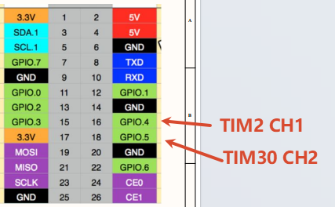

Gino_driver_pwm
1. 简介
本工程是 GD32H77D Gino 开发板的 PWM2 与 PWM30 双通道输出参考工程，用于单独学习、配置和验证 PWM 定时器输出原理。独立工程只启用该功能需要的驱动和组件，可作为应用开发和功能集成的参考。
主参考设备：pwm2。
所有示例均保留 uart1 作为 FinSH/MSH 控制台，串口参数为 115200-8-N-1；PC4 LED 用于运行指示。
当前工程包含以下 MSH 命令：
命令 |
作用 |
示例/备注 |
|---|---|---|
|
检查当前示例使用的主要设备是否已注册。 |
默认检查 |
|
启动双路 PWM 输出测试。 |
在 PA7 和 PG7 输出 PWM。 |
|
停止双路 PWM 输出测试。 |
关闭测试输出。 |
2. PWM 定时器输出原理详解
PWM 由定时器周期寄存器决定频率，由比较寄存器决定高电平持续时间。示例同时驱动 pwm2 通道 2 和 pwm30 通道 3，并周期调整 pulse，用于验证两个定时器通道和引脚复用。
一次完整的数据路径如下：
pwm_dual_test -> RT-Thread PWM -> TIMER/PWM 比较输出 -> PA7 与 PG7
协议层只定义通信或数据处理规则，最终仍需要控制器时钟、引脚复用、中断/DMA 和上层状态机共同工作。扫描到设备、注册了总线或编译通过，都不能替代完整的数据传输验证。
3. GD32H77D 的定时器 PWM 特性
GD32H77D 定时器使用计数周期决定 PWM 频率，比较值决定有效电平时间。工程提供 pwm2 通道 2（PA7）和 pwm30 通道 3（PG7），用于同时验证两路定时器输出。
4. RT-Thread PWM 设备接口
RT-Thread PWM 接口使用 rt_device_pwm_set/rt_pwm_set 设置 period 和 pulse，使用 rt_device_pwm_enable/rt_pwm_enable 启动通道，停止时调用对应 disable 接口。参数时间单位以当前 RT-Thread PWM API 定义为准。
主参考设备：pwm2。设备是否已注册可先通过 list_device 和 gino_device_probe 判断；更上层的文件系统、网络或 GUI 组件还需继续验证其挂载、链路或刷新状态。
5. 硬件说明
pwm2 通道 2 输出到 PA7，pwm30 通道 3 输出到 PG7，可使用示波器或逻辑分析仪观察。
默认控制台：UART1，PA2/PA3，AF7，115200-8-N-1。
使用示波器或逻辑分析仪确认 PA7 和 PG7 上的频率与占空比。

6. 工程示例说明
以下源码路径以 SDK 仓库中的工程目录为基准：
applications/pwm_dual_test.c../../libraries/gd32_drivers/drv_pwm.cboard/Kconfig
建议先阅读 applications/main.c 和 applications/device_probe.c，再沿数据路径进入对应驱动、组件或软件包。示例保留 MSH 命令，便于在不改动应用代码的情况下观察设备注册和运行状态。
6.1 运行命令
gino_device_probepwm_dual_test startpwm_dual_test stop
6.2 运行步骤
检查供电、接线、外部模块和接口电平。
复位开发板，确认 UART1 控制台可用且 PC4 LED 正常闪烁。
执行
list_device，确认依赖总线和目标设备均已注册。按顺序执行上述命令，并同时观察返回值、外部波形、网络状态或显示结果。
7. 运行效果
7.1 预期现象
list_device中出现pwm2和pwm30。启动测试后 PA7、PG7 输出约 2 kHz PWM。
示波器可观察到占空比按示例规律变化，停止后输出关闭。